Metric για macOS
Εργαλειοθήκη χρονισμού και συχνοτήτων σε παράθυρο για macOS, με ενσωματωμένο μετρονόμο. Ορίζει χρόνους καθυστέρησης από ένα τέμπο, υπολογίζει λόγους και πλευρικές ζώνες FM, συγχρονίζει ένα LFO με τον ρυθμό και μεταφέρει ένα δείγμα, σε παράθυρο που αλλάζει μέγεθος και μπορείς να κρατάς ανοιχτό δίπλα στο DAW σου. Υποστηρίζονται η Siri, οι Συντομεύσεις και ένα γραφικό στοιχείο του Κέντρου ειδοποιήσεων.
- Μετρονόμος με τέμπο με πάτημα και οπτικό χρόνο
- Μετατροπέας BPM → ms / Hz (απλές, παρεστιγμένες, τριολικές τιμές)
- Πίνακας Φθόγγος ↔ Συχνότητα (108 φθόγγοι, A4 = 440 Hz)
- Μεταφορά και ταχύτητα, υπολογιστής FM, ρυθμοί LFO, 32 αρμονικές
- Τέμπο με πάτημα από τη γραμμή μενού, χρόνοι καθυστέρησης σε ms ή Hz, μαζί με μετρονόμο και φθόγγους
- Siri, Συντομεύσεις και γραφικό στοιχείο BPM στο Κέντρο ειδοποιήσεων
Στιγμιότυπα
Περιλαμβάνονται φωτεινά και σκούρα στιγμιότυπα που ακολουθούν το θέμα του ιστότοπου.

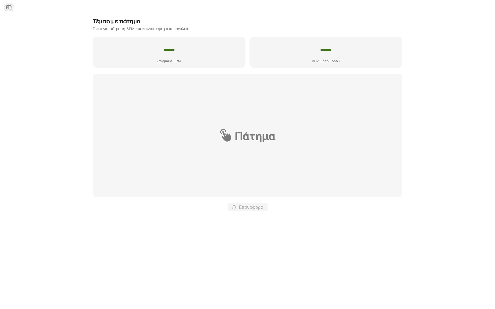
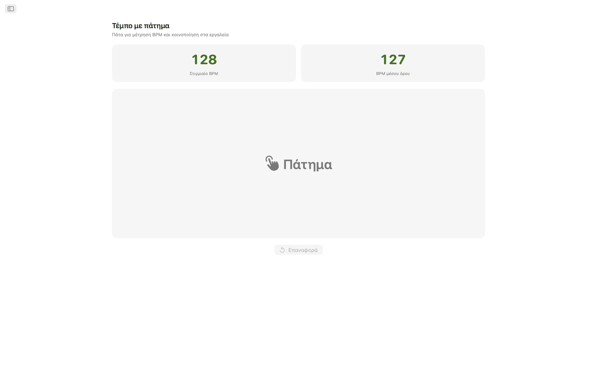
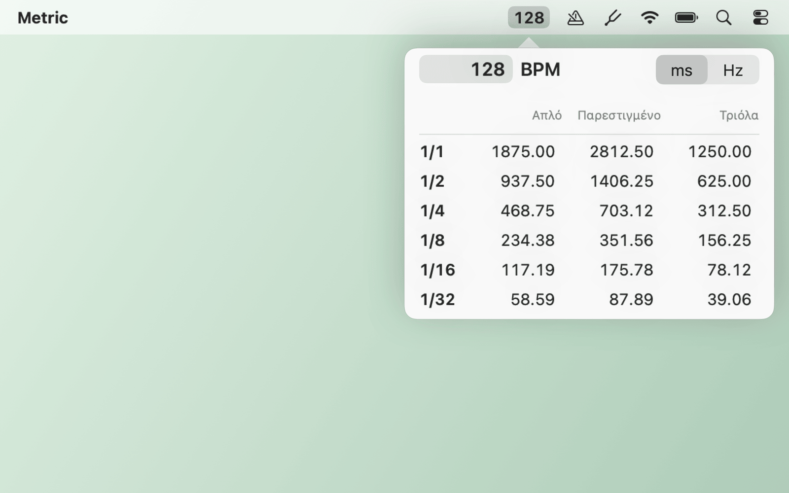
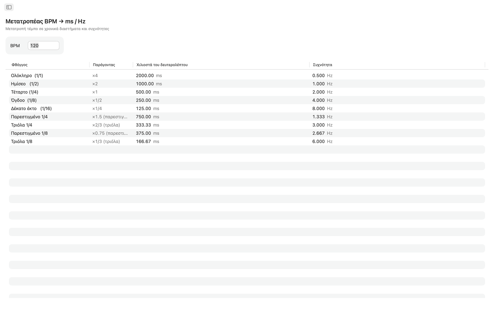
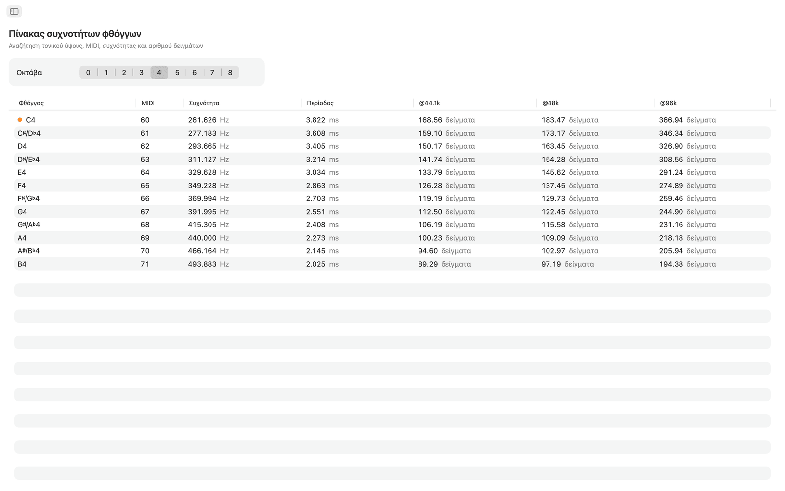
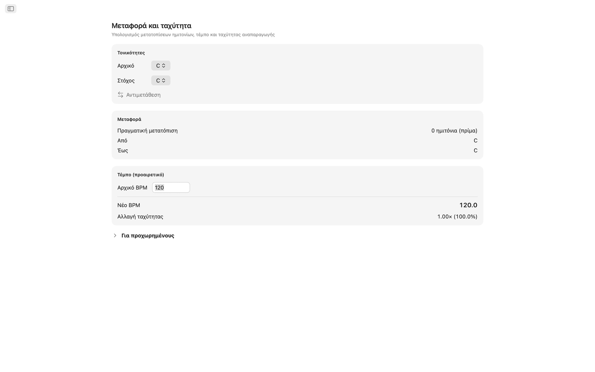
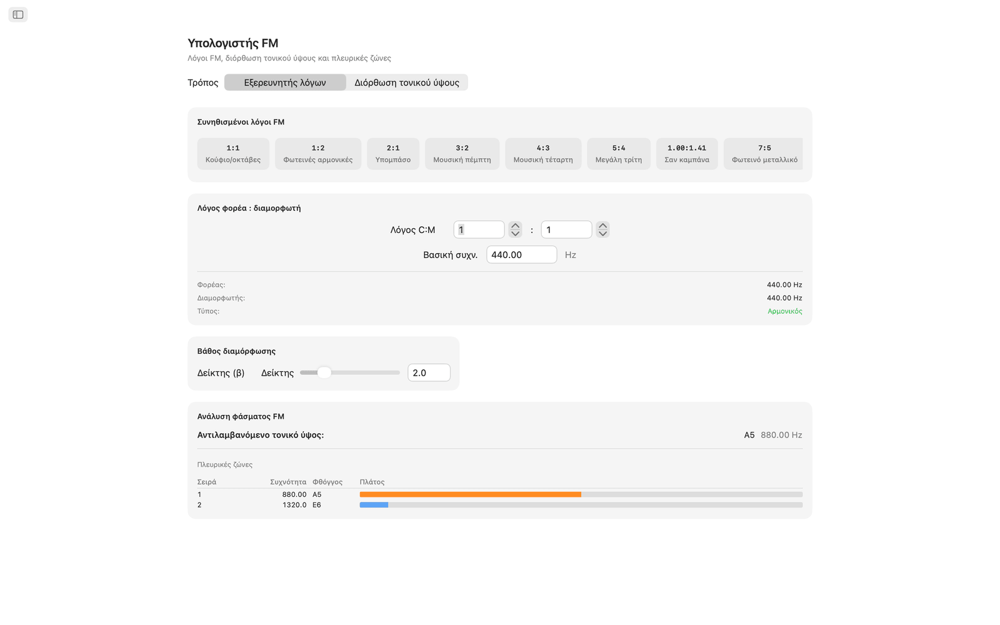
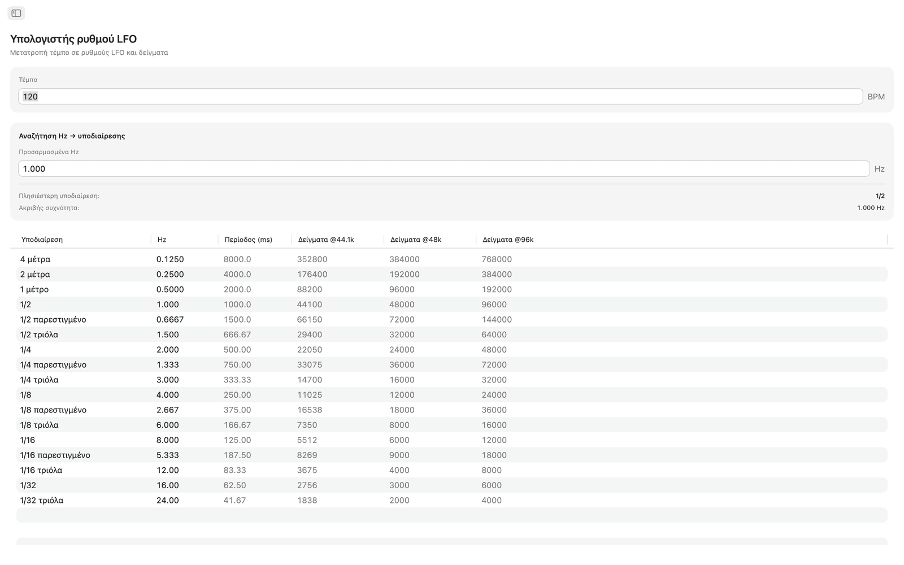
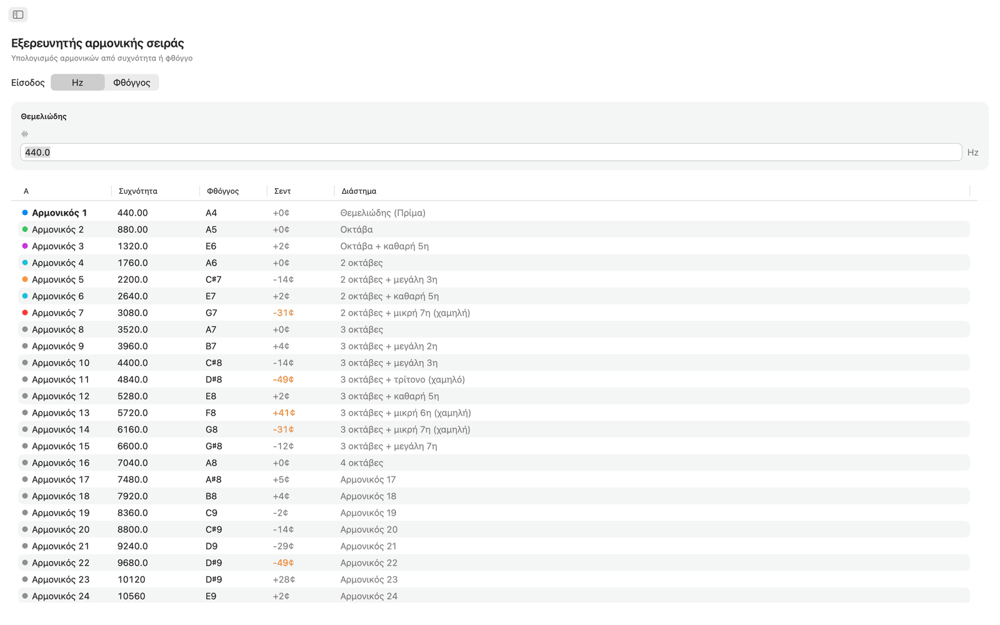

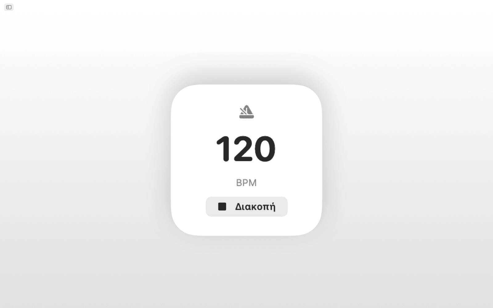
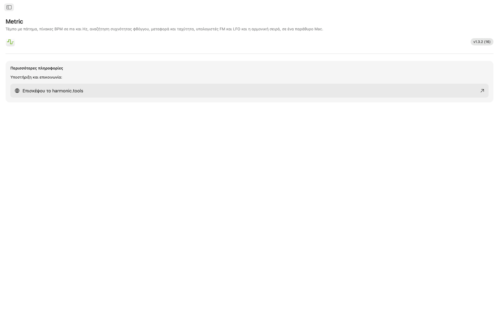
Χαρακτηριστικά
- Ο μετρονόμος έχει καντράν τέμπο, τέμπο με πάτημα, ενδείκτες μέτρου, υποδιαιρέσεις και οπτική ένδειξη χρόνου.
- Κάνε κλικ στη μεγάλη περιοχή πατήματος για να μετρήσεις το τέμπο. Το Metric δείχνει το BPM από το τελευταίο πάτημά σου και κυλιόμενο μέσο όρο έως οκτώ πατημάτων, και όποια ένδειξη μπορεί να σταλεί με ένα κλικ στον Μετατροπέα BPM, στη Μεταφορά ή στον Ρυθμό LFO.
- Ο μετατροπέας BPM → ms / Hz παίρνει ένα τέμπο και δίνει απλές, παρεστιγμένες και τριολικές τιμές για ολόκληρο, ημίσεο, τέταρτο, όγδοο και δέκατο έκτο. Κάθε γραμμή δείχνει milliseconds και συχνότητα σε Hz, ώστε να ρυθμίσεις delay, pre-delay ρεβέρμπ ή χρονισμό sidechain χωρίς αριθμομηχανή.
- Ο πίνακας συχνοτήτων φθόγγων περιλαμβάνει και τους 108 χρωματικούς φθόγγους από C0 έως B8. Κάθε φθόγγος δείχνει αριθμό MIDI, συχνότητα σε Hz, περίοδο σε ms και δείγματα στα 44,1 kHz, 48 kHz και 96 kHz. Το μεσαίο Ντο επισημαίνεται. Βασίζεται σε A4 = 440 Hz.
- Για μεταφορά, διάλεξε αρχική και τελική τονικότητα για να δεις τη μετατόπιση σε ημιτόνια, το όνομα του διαστήματος και την ακριβή τιμή μεταφοράς στο DAW. Πρόσθεσε το αρχικό BPM και το Metric υπολογίζει το νέο τέμπο και τον λόγο ταχύτητας αναπαραγωγής. Ένα ρυθμιστικό σεντ (±100) και ένα ρυθμιστικό ταχύτητας δύο οκτάβων (±24 ημιτόνια) επιτρέπουν λεπτομερή ρύθμιση.
- Ο υπολογιστής FM έχει δύο λειτουργίες. Ο Εξερευνητής λόγων ορίζει λόγους φορέα και διαμορφωτή με βασική συχνότητα και έχει δέκα προρυθμίσεις FM, από κούφιες οκτάβες (1:1) έως ανάρμονες καμπάνες (1:π). Η Διόρθωση τονικού ύψους δουλεύει αντίστροφα: διάλεξε φθόγγο-στόχο και πάρε τις ακριβείς συχνότητες φορέα και διαμορφωτή. Και οι δύο λειτουργίες δείχνουν πίνακα πλευρικών ζωνών με έως δέκα επιμέρους, με τις συχνότητες, τους πλησιέστερους φθόγγους και έγχρωμα πλάτη, με ρυθμιστικό για τον δείκτη διαμόρφωσης.
- Ο υπολογιστής ρυθμού LFO μετατρέπει οποιοδήποτε BPM σε ρυθμούς LFO σε 17 μουσικές υποδιαιρέσεις, από τέσσερα μέτρα έως τριόλες 1/32. Κάθε γραμμή δείχνει Hz, περίοδο σε ms και δείγματα ανά κύκλο στα 44,1 kHz, 48 kHz και 96 kHz. Η αντίστροφη αναζήτηση παίρνει οποιαδήποτε τιμή Hz και βρίσκει την πλησιέστερη μουσική υποδιαίρεση, με ένδειξη του σφάλματος.
- Ο εξερευνητής αρμονικής σειράς ξεκινά από μια συχνότητα ή οποιονδήποτε φθόγγο και απαριθμεί τις πρώτες 32 αρμονικές με συχνότητα, όνομα πλησιέστερου φθόγγου, απόκλιση σε σεντ και ετικέτα διαστήματος. Οι αρμονικές χαμηλής τάξης έχουν χρώμα και οι αποκλίσεις πάνω από 30 σεντ επισημαίνονται, ώστε το ανάρμονο περιεχόμενο να ξεχωρίζει εύκολα.
Κοινό τέμπο και κούρδισμα
Πάτησε ένα τέμπο μία φορά και ο Μετατροπέας BPM, η Μεταφορά και ο Ρυθμός LFO χρησιμοποιούν όλα το ίδιο ζωντανό BPM. Η Συχνότητα φθόγγου, ο Υπολογιστής FM και οι Αρμονικές χρησιμοποιούν όλα A4 = 440 Hz.
Siri, Συντομεύσεις και γραφικό στοιχείο
Ζήτα από τη Siri να ξεκινήσει ή να σταματήσει τον μετρονόμο, να ορίσει ένα BPM, να πατήσει ένα τέμπο, να μετατρέψει BPM σε ms, να βρει τη συχνότητα ενός φθόγγου ή να μεταφέρει ένα τέμπο. Κάθε εργαλείο είναι και ενέργεια Συντομεύσεων, ενώ το γραφικό στοιχείο BPM κρατά το τέμπο σου στο Κέντρο ειδοποιήσεων.
Εργαλεία γραμμής μενού
Πάτα τέμπο από τη γραμμή μενού χωρίς να ανοίξεις την εφαρμογή. Με δεξί κλικ βλέπεις χρόνους καθυστέρησης σε ms ή Hz και πληκτρολογείς οποιοδήποτε τέμπο. Τα στοιχεία μετρονόμου και τονικού ύψους φθόγγων είναι προαιρετικά και υπάρχουν ρυθμίσεις για λειτουργία μόνο γραμμής μενού και άνοιγμα κατά τη σύνδεση.
Στην επιφάνεια εργασίας
- Λειτουργεί εξ ολοκλήρου εκτός σύνδεσης. Χωρίς λογαριασμό, διαφημίσεις ή παρακολούθηση
- Εγγενής εφαρμογή macOS με πλευρική στήλη
- Διεπαφή που προσαρμόζεται στη σκούρα εμφάνιση και ακολουθεί την εμφάνιση του συστήματος
- Δείγματα στα 44,1 kHz, 48 kHz και 96 kHz
- Παράθυρο που αλλάζει μέγεθος. Κράτα το ανοιχτό δίπλα στο DAW σου
Προσβασιμότητα
Λειτουργεί με VoiceOver και Φωνητικό έλεγχο και μπορεί να χρησιμοποιηθεί από το πληκτρολόγιο, με τα πλήκτρα βέλους και το πλήκτρο διαστήματος.
Το Metric είναι δωρεάν για 7 ημέρες. Μετά τη δοκιμή, η πλήρης πρόσβαση είναι εφάπαξ αγορά, χωρίς συνδρομή.